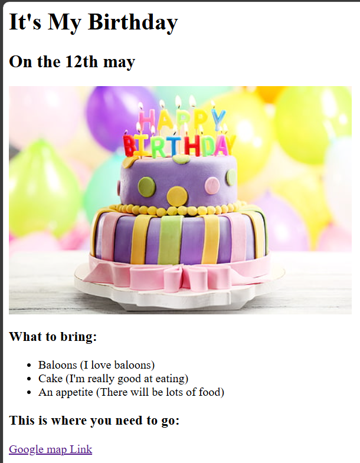

Yolo Solo

Address
Contact me
Summary
A highly motivated and reliable individual who takes pride in delivering quality work. Searching for an advanced
challenge in a dynamic organisation where I can implement my skill set and knowledge as well as use my
capabilities in the best way possible so that I can enrich my skills and contribute to the organisation's growth. I
am comfortable working independently as well as in a team environment, always eager to learn new skills and
take on new challenges. Multi-lingual individual who speaks fluent Nepali, English, Hindi and Korean (beginner).
Education
Bachelor of Technology in Aeronautical Engineering (2015-2019)
Swami Vivekananda University, Sagar, Madhya Pradesh, India.
Relevant Modules: Fluid Dynamics, Aerodynamics, Propulsion, Solid Materials, Thermodynamics.
- Workshop on “RC Aircraft & Drone Design & Fabrication”
- Workshop on “Basic Robotics” organised by IIT, India.>
- Completed 3 months fall Internship in government body, Nepal Airlines.
High Schooling (2011-2014)
Dr. Graham's Homes, KalimPong, West Bengal, India.
- Class 12 ISC Board (73%)
- Class 10 ICSE Board (80%)
Work ExPerience
Right Path Career Counselling (Nepal) - Admission Head (Dec,2019 - Nov,2022)
- Gained valuable recruitment skills.
- Organised the factual data and documents of the students.
- Learned Stakeholder management skills through meetings with international representatives.
- Lead team's training of new hires.
- Carried out the obligation of the team player.
- Analysed data working in Microsoft Word and Excels.
- Worked on Customer Relationship Management (CRM) software system to track leads and clients.
Nepal Airlines, Tribhuvan International Airport (Nepal) - Internship (Sept,2019-Dec,2019)
- Learned valuable lessons of teamwork through the work of senior technical and maintenance engineers.
- Maintained systematic flight and operation data.
- learned the difference in having a good mentor.
- gained different ideas to solve problems when there occurs differences in opinions.
- got insights about client services while maintaining good communication skills.
- got an opportunity to learn about aviation business.
Key Skills
- Talent sourcing - attended events, learned and experimented, connected with my leads.
- Recruitment strategy - Screened, evaluated and identified suitable candidates for required roles.
- Event management - education fairs and clients meetings.
- Team Working - collaborated and supported in the projects.
- Communication & Presentation - provided clear visions and objectives of my company to clients and
partners
- Critical Thinking - provided solutions during project management.
- Leadership - Lead and guided my team members .
Achievements
- Awarded as an authentic recruiter of Right Path Career Counselling.
- Employee of the month for successfully completing the project within the allotted deadline.
- Recognition for successful completion of CNC Programming (Milling and Turning)
- Recognition for successful completion of AUTOCAD (2D and 3D Modelling)
- Recognition for successful completion of CATIA (Modelling, Assembly and Drafting)
Hobbies & interests
Are you interested to know more about me? If you want to know more about my hobbies and interests then you are just one click away.
Only those who are interested are requested to click.
Hobby